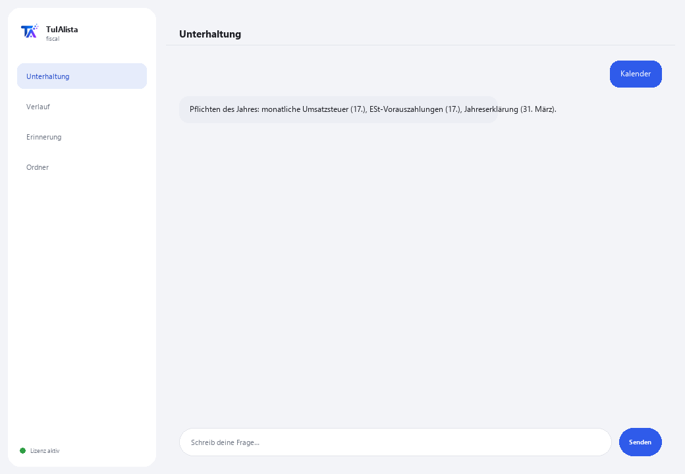

Agent für Steuer-Compliance
Organisiert Ihre Steuerdokumente, erstellt Ihren Pflichtenkalender und warnt Sie vor jeder Steuerfrist.
Was löst er und was brauchen Sie?
Eine Steuerfrist zu verpassen kostet Bußgelder und Zuschläge. Dieser Agent verwandelt den Ordner, in dem Sie Ihre Steuerdokumente aufbewahren (Rechnungen, Erklärungen, Bescheinigungen, CFDI-XML), in ein Compliance-Panel: Er sagt Ihnen, was bald fällig ist, was fehlen könnte und welche Ausgaben abzugsfähig sein könnten — alles auf Ihrem eigenen Gerät berechnet.
- Sie brauchen: Ihren Lizenzschlüssel (TIA-XXXX-XXXX-XXXX-XXXX) und den Ordner mit Ihren Dokumenten. Kein Python, keine technischen Kenntnisse.
- Erstes Ergebnis in weniger als 5 Minuten: Sie installieren, aktivieren, wählen Ihren Ordner und führen Kalender aus, um Ihre Pflichten des Jahres zu sehen.
- Ihre Steuerdokumente verlassen nie Ihren Computer — die Analyse läuft lokal.
soporte@tuialista.com oder besuche tuialista.com/soporte — wir antworten normalerweise am selben Werktag.1 Was dieser Agent tut
Sie zeigen ihm den Ordner mit Ihren Steuerdokumenten und er:
- Indiziert sie (PDF, Word, Excel, CSV, TXT, CFDI-XML, auch in Unterordnern) und extrahiert die Schlüsseldaten: Steuernummer, Regime, Zeiträume, Dokumenttyp, Umsatzsteuer, Einkommensteuer, Einbehalte, Summe und Daten.
- Erstellt einen Pflichtenkalender des Geschäftsjahres mit den typischen Fristen gemäß dem erkannten Regime.
- Warnt Sie vor bald fälligen Pflichten (und kürzlich abgelaufenen).
- Erkennt mögliche Abzüge, die in Ihren Dokumenten erwähnt werden.
- Erkennt Dokumente oder Monate, die in Ihrer Akte fehlen könnten.
- Erstellt eine steuerliche Management-Zusammenfassung des Zeitraums, mit Empfehlungen.
- Beantwortet freie Fragen zu Ihrer steuerlichen Situation, in Ihrer eigenen Sprache.
Ergebnis: Sie erreichen jede Steuerfrist organisiert und ohne Überraschungen — ohne jede Datei einzeln öffnen zu müssen, um zu wissen, wo Sie stehen.
2 Installation (2 Minuten)
Für Windows. Keine dauerhafte Internetverbindung nötig, nichts wird in die Cloud hochgeladen.
Laden Sie das Installationsprogramm von tuialista.com/descargar herunter (Steuer-Agent) und öffnen Sie es. Es erstellt eine Verknüpfung mit dem Logo auf Ihrem Desktop — kein Python oder Terminal erforderlich.
Doppelklicken Sie auf das neue Symbol. Fügen Sie Ihren Lizenzschlüssel ein (er wurde Ihnen beim Kauf per E-Mail zugesandt) und klicken Sie auf Aktivieren. Sie sehen ein grünes Häkchen, wenn er gültig ist.
Wählen Sie den Ordner mit Ihren Steuerdokumenten aus und klicken Sie auf Agent jetzt verwenden. Beim nächsten Öffnen startet er direkt — er merkt sich Ihren Schlüssel und Ihren Ordner.
3 So verwenden Sie ihn
Der Agent öffnet ein Chat-Fenster, wie eine Messaging-App — kein schwarzer Programmierer-Bildschirm. Sie schreiben Ihren Befehl oder Ihre Frage in das Textfeld unten, klicken auf Senden (oder Enter), und die Antwort erscheint als Nachricht, genau wie auf diesem echten Bild:

Die folgenden Befehle sind die Wörter, die Sie in dasselbe Textfeld eingeben können:
> KalenderIhre Pflichten des Jahres: vorläufige Einkommensteuerzahlungen, monatliche Umsatzsteuer, Drittinformationserklärung und Jahreserklärung, mit typischen Fristen gemäß Ihrem Regime.
> Pflichten [Tage]Was bald fällig wird — standardmäßig die nächsten 30 Tage, einschließlich kürzlich abgelaufener, sortiert nach Dringlichkeit. Z. B.: Pflichten 15.
> AbzügeErkennt Erwähnungen potenziell abzugsfähiger Ausgaben (Miete, Honorare, Kraftstoff, Software, Sozialversicherung...) und in welchen Dateien sie erscheinen.
> FehlendesMonate des Geschäftsjahres ohne Belege und erwartete Dokumenttypen, die nicht gefunden wurden.
> ZusammenfassungSteuerliche Management-Zusammenfassung: allgemeine Lage, verfügbare Dokumentation, kritische Pflichten, mögliche Abzüge und Empfehlungen.
> analysieren <Datei>Steuernummer, Typ, Regime, Zeiträume, Umsatzsteuer, Einkommensteuer, Einbehalte, Summe und Daten, extrahiert aus einem konkreten Dokument. Z. B.: analysieren erklaerung_mai.pdf.
> freie Frage?Sie können jede Frage in natürlicher Sprache schreiben, z. B.: welche Pflichten habe ich unter dem vereinfachten Steuerregime?
> beendenBeendet die Sitzung (funktioniert auch mit exit).
Möchten Sie die 20 vollständigen Rezepte mit einem echten Beispiel für jedes sehen? Sehen Sie sich den Rezeptkatalog an — ein eigenes Dokument wegen seiner Länge: catalogo_recetas.pdf neben diesem Handbuch, oder die interaktive Version unter tuialista.com/guia/fiscal/recetas.
4 Beispiele für häufige Anwendungen
Den Monat vorbereiten
Pflichten 30 → Fehlendes
Abzüge vor der Jahreserklärung prüfen
Abzüge → Zusammenfassung
Den vollständigen Jahreskalender ansehen
Kalender
Eine punktuelle Frage
wann ist meine Jahreserklärung als Einzelperson fällig?
5 Häufig gestellte Fragen
Werden meine Steuerdokumente ins Internet hochgeladen?
Welche Formate akzeptiert er?
Sind die Kalenderdaten offiziell?
Ersetzt das meinen Steuerberater?
Woher kennt er mein Regime?
Sind die erkannten Abzüge sicher abzugsfähig?
Sind die extrahierten Umsatzsteuer-/Einkommensteuerbeträge genau?
Liest er ein gescanntes PDF?
In welcher Sprache antwortet er?
Verändert er meine Dokumente?
6 Problemlösung
Ein .pdf, .docx oder .xlsx wird nicht gelesen
Zeigt “0 indizierte Dokumente”
Meine Steuernummer oder mein Regime wird nicht erkannt
Zeigt “Lizenz ungültig” oder fordert erneute Verbindung
“Keine KI-Anbieter konfiguriert”
Keine dieser Lösungen hat Ihr Problem behoben? Schreiben Sie uns direkt — wir schauen es uns gerne gemeinsam mit Ihnen an.
soporte@tuialista.com oder besuche tuialista.com/soporte — wir antworten normalerweise am selben Werktag.7 Datenschutz und Vertraulichkeit
Ihre Steuerdokumente verlassen nie Ihren Computer.
- Der Agent liest, indiziert und extrahiert Daten lokal, auf Ihrem eigenen Gerät. Er lädt Ihre Dokumente auf keinen Server oder an die Steuerbehörde hoch.
- Der Kalender, die Pflichten, die Abzüge, das Fehlende und die Dokumentanalyse werden auf Ihrem Gerät berechnet.
- Das Einzige, was über das Internet läuft, ist: (1) eine Überprüfung, dass Ihre Lizenz aktiv ist — die Ihre Dokumente nicht enthält —, und (2) bei Verwendung von Zusammenfassung oder einer freien Frage wird ein Ausschnitt der relevanten Information an die KI-Engine gesendet, um diese Antwort zu verfassen.